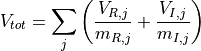
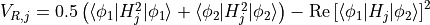
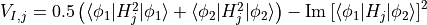
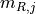
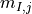
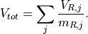

ofex.measurement¶
This module provides various techniques for optimal quantum measurements.
It includes functionality for managing measurement variance, grouping Pauli operators, and other related tools for efficient quantum computations. Specific techniques, such as the iterative coefficient splitting and various grouping algorithms, are also provided.
- ofex.measurement.killer_shift_opt_fermion_hf(fham: FermionOperator, hf_vector: BinaryFockVector, transform: str, optimization_level: int = 1, repeat_opt: int = 1, f2q_kwargs: Dict[str, Any] | None = None) Tuple[FermionOperator, QubitOperator, float][source]¶
Perform the killer shift optimization for a given fermionic Hamiltonian and Hartree-Fock (HF) vector.
This method applies the killer shift algorithm to reduce the measurement cost in the transitional amplitude <φ0|H|φ1>, where φ0 corresponds to a single Slater determinant. The algorithm identifies a Hermitian operator T such that T|φ0> = t|φ0>, where t is a real constant, minimizing the norm of H - T. It supports varying levels of optimization and is based on the methodologies described in the paper [Arxiv:2409.02504](https://arxiv.org/abs/2409.02504).
- Parameters:
fham (FermionOperator) – The input fermionic Hamiltonian to which the killer shift optimization is applied.
hf_vector (BinaryFockVector) – The Hartree-Fock state represented as a binary vector, serving as the reference state for the killer shift.
transform (str) – Specifies the transformation method for mapping fermionic operators to qubit operators (e.g., ‘Jordan-Wigner’ or ‘Bravyi-Kitaev’), supported in the function ofex.transform.fermion_to_qubit_operator.
optimization_level (int, optional) – The optimization level used in the killer shift procedure. Available options (default: 1): - 0: Use the number operator only. - 1: Include contributions from one-body operators. - 2: Include contributions from both one- and two-body operators.
repeat_opt (int, optional) – The number of optimization iterations to perform for refining the solution (default: 1).
f2q_kwargs (Optional[Dict[str, Any]], optional) – Additional keyword arguments passed to the fermion-to-qubit transformation functions (default: None).
- Returns:
- A tuple containing:
FermionOperator: The optimized fermionic Hamiltonian with reduced norm after applying the killer shift.
QubitOperator: The corresponding qubit Hamiltonian obtained after the fermion-to-qubit mapping and applying the killer shift.
float: The energy constant resulting from the killer shift transformation.
- Return type:
Tuple[FermionOperator, QubitOperator, float]
- ofex.measurement.fragment_variance(grp_ham: List[QubitOperator], state1: ndarray | Dict[BinaryFockVector, Number] | lil_matrix | None, state2: ndarray | Dict[BinaryFockVector, Number] | lil_matrix | None, shots: ndarray, true_cov_dict: Dict[Tuple[Tuple[Tuple[int, str], ...], Tuple[Tuple[int, str], ...]], float] | Dict[Tuple[Tuple[Tuple[int, str], ...], Tuple[Tuple[int, str], ...]], Tuple[float, float]] | None = None, anticommute: bool = False) float[source]¶
Computes the variance of Hamiltonian fragments based on reference states, grouped Hamiltonian terms, and measurement shot counts.
For the j-th fragment
H_jingrp_ham, the total variance is computed as:
where:
.
.
Here,  (shots_real) and  (shots_imag) represent the real and imaginary shot counts for
H_j.Case Explanation:
Single-state variance calculations (
state2=Noneandshots.ndim==1):
Transition-state variance calculations (
state2provided andshots.ndim==2):Both real and imaginary contributions are included in the computation.
For further details, see ArXiv:2409.02504.
- Parameters:
grp_ham (List[QubitOperator]) – A list of Hamiltonian fragments represented by QubitOperators.
state1 (Optional[State]) – The first reference state (required for computation).
state2 (Optional[State]) – The second reference state (optional; needed for transition-state variance).
shots (np.ndarray) –
Array defining measurement shot counts:
If 1D (shape
[n]): Represents real shot countsm_{R,j}; applicable for single-state variance.If 2D (shape
[n, 2]): Represents realm_{R,j}and imaginarym_{I,j}shot counts; used for transition-state variance.
true_cov_dict (Optional[Union[PauliCovDict, TransitionPauliCovDict]]) – An optional precomputed dictionary storing covariances of Pauli operators.
anticommute (bool) – If True, applies anticommutation rules during the computation.
- Returns:
Total computed variance, calculated as a sum of contributions from all Pauli operator groups.
- Return type:
float
- ofex.measurement.pauli_covariance(pauli_list: List[QubitOperator], grp_pauli_list: List[List[int]], state1: ndarray | Dict[BinaryFockVector, Number] | lil_matrix, state2: ndarray | Dict[BinaryFockVector, Number] | lil_matrix | None, num_workers=1, anticommute=False, cov_buf_dir: str | None = None, phase_list: List[float] | None = None, debug: bool = False) Dict[Tuple[Tuple[Tuple[int, str], ...], Tuple[Tuple[int, str], ...]], float] | Dict[Tuple[Tuple[Tuple[int, str], ...], Tuple[Tuple[int, str], ...]], Tuple[float, float]] | Dict[float, Dict[Tuple[Tuple[Tuple[int, str], ...], Tuple[Tuple[int, str], ...]], Tuple[float, float]]][source]¶
Computes the Pauli covariance matrix for a given set of Pauli operators and states.
This function supports parallel computation and optionally saves covariance results to files. The covariance formulas depend on whether a single reference state (state2=None) or transition states (state2 provided) are used.
Covariance cases (∀P,Q ∈ pauli_list[grp_pauli_list[grp_idx]] ∀grp_idx):
1. Single-state (state2=None; operators commute): Cov[P,Q] = <φ1|PQ|φ1> - <φ1|P|φ1><φ1|Q|φ1>
2. Transition states (state2 provided): Cov[P,Q]_R = 1/2 (<φ1|{P, Q}|φ1> + <φ2|{P, Q}|φ2>) - Re[<φ1|P|φ2>] * Re[<φ1|Q|φ2>] Cov[P,Q]_I = 1/2 (<φ1|{P, Q}|φ1> + <φ2|{P, Q}|φ2>) - Im[<φ1|P|φ2>] * Im[<φ1|Q|φ2>]. For transitional states, note that anticommute=True, the first term is ignored.
If phase_list is given, Cov[P,Q] * exp(-1j * ph) for ph in phase_list is calculated, which is implemented to avoid duplicated computation for different phase values.
For further details, see [ArXiv:2409.02504](https://arxiv.org/abs/2409.02504).
- Parameters:
pauli_list (List[QubitOperator]) – A list of Pauli operators for which covariances are calculated.
grp_pauli_list (List[List[int]]) – A list of groups, where each group is a list of indices referring to subsets of pauli_list. Each subset indicates Pauli operator groups over which covariance calculation should be carried out. This grouping allows efficient parallel computation or targeted subset evaluations.
state1 (State) – The first reference state, provided as input.
state2 (Optional[State]) – The second reference state, required for calculating transition covariances.
num_workers (int) – Number of parallel workers to distribute computation.
anticommute (bool) – Enforces anticommutation rules if True.
cov_buf_dir (Optional[str]) – Directory path to save intermediate covariance results as pickle files.
phase_list (Optional[List[float]]) – List of phase values for covariance calculations.
debug (bool) – If True, prints debugging information during execution.
- Returns:
A dictionary where keys are Pauli operator pairs and values are covariance coefficients. - PauliCovDict: For single-state covariance calculations. - TransitionPauliCovDict: For transition-state covariance calculations without phase shift. - PhasedTransitionalPauliCovDict: For phased transition-state covariance calculations.
- Return type:
Union[PauliCovDict, TransitionPauliCovDict, PhasedTransitionalPauliCovDict]
- ofex.measurement.empirical_pauli_covariance(idx, ov_dict: dict, cov_dict: dict, grp: List[int], pauli_list: List[QubitOperator], calc_diag: bool, debug=False)[source]¶
Computes empirical covariance of Pauli operators using a provided overlap dictionary.
This function uses overlap dictionaries to compute diagonal and off-diagonal covariance terms for the specified group of Pauli operators.
- Parameters:
idx (int) – Numerical index identifying the operator group being processed.
ov_dict (dict) – Dictionary containing precomputed overlap values for Pauli operators.
cov_dict (dict) – Output dictionary to store the resulting covariance values.
grp (List[int]) – List of indices indicating the subset of operators being processed.
pauli_list (List[QubitOperator]) – List of available Pauli operators used in the computation.
calc_diag (bool) – When True, computes diagonal terms in addition to off-diagonal covariance terms.
debug (bool) – If True, enables detailed logging for debugging the function’s execution.
- ofex.measurement.sorted_insertion(op: QubitOperator, anticommute=False) List[QubitOperator][source]¶
Groups terms in the given QubitOperator into measurement-compatible sets.
- Parameters:
op (QubitOperator) – The input operator to be grouped.
anticommute (bool) – If True, grouping is done for anticommuting terms; otherwise, for commuting terms (default: False).
- Returns:
A list of grouped operators for efficient measurement, where each group corresponds to a QubitOperator.
- Return type:
List[QubitOperator]
References
- ofex.measurement.iterative_sorted_insertion(op: QubitOperator) Tuple[List[QubitOperator], List[QubitOperator]][source]¶
Iteratively groups terms in the given QubitOperator into commuting and anticommuting sets.
WARNING: This method is not recommended for use due to its ineffectiveness.
- Parameters:
op (QubitOperator) – The input operator to be grouped.
- Returns:
A tuple containing two lists: - The first list contains QubitOperator groups with commuting terms. - The second list contains QubitOperator groups with anticommuting terms.
- Return type:
Tuple[List[QubitOperator], List[QubitOperator]]
- ofex.measurement.optimal_sorted_insertion(op: QubitOperator, anticommute, init_method='even', norm_atol=1e-05, max_iter=10000, debug=False) List[QubitOperator][source]¶
Groups terms in the input QubitOperator into measurement-compatible sets by optimizing the norm using an iterative splitting method.
- Parameters:
op (QubitOperator) – The input operator to be grouped.
anticommute (bool) – If True, performs grouping based on anticommuting compatibility; otherwise, based on commuting compatibility.
init_method (str) – Initialization method for splitting terms into groups. Possible values: - “even”: Performs even splitting of terms into groups, - “si”: Uses sorted insertion for initialization. Default is “even”.
norm_atol (float) – The convergence tolerance for the norm difference (default: 1e-5).
debug (bool) – If True, logs debug information about the grouping process (default: False).
- Returns:
A list of grouped operators for efficient measurement, where each group corresponds to a QubitOperator with optimal norm distribution.
- Return type:
List[QubitOperator]
- ofex.measurement.pauli_split_group(ham, anticommute: bool = False, method: str = 'even', debug: bool = False)[source]¶
Splits the given Hamiltonian into groups of Pauli operators based on (anti)commutation compatibility, using the specified initialization method. Unlike the sorted_insertion methods, this method allows a single Pauli operator to be partitioned across multiple groups, depending on (anti)commutation.
- Parameters:
ham (QubitOperator) – The input Hamiltonian to be split into Pauli operator groups.
anticommute (bool) – Specifies the grouping criterion. If True, groups Pauli operators based on anticommutation; if False, groups them based on commutation (default: False).
method (str) – The initialization method for distributing terms among groups: - “even”: Distributes terms evenly across different groups. - “si”: Initializes groups using a sorted insertion method. The default value is “even.”
debug (bool) – If True, prints detailed debug information about the execution process (default: False).
- Returns:
The first element is a list of the grouped Hamiltonian fragments.
The second element is a tuple containing: - pauli_list: List of all Pauli operators from the Hamiltonian. - grp_pauli_list: List of Pauli operators in each group. - pauli_grp_list: List mapping Pauli operators to their respective group indices.
- Return type:
Tuple[List[QubitOperator], Tuple[List[QubitOperator], List[List[int]], List[List[int]]]]
ofex.measurement.iterative_coefficient_splitting¶
This module provides the main interface for initializing and running ICS (Iterative Coefficient Splitting) processes.
The module includes: - Initialization processes for both standard and efficient ICS implementations. - Functions to run standard and efficient ICS.
- ofex.measurement.iterative_coefficient_splitting.init_ics(ham: QubitOperator, ref1: ndarray | Dict[BinaryFockVector, Number] | lil_matrix, ref2: ndarray | Dict[BinaryFockVector, Number] | lil_matrix | None = None, num_workers: int = 1, anticommute: bool = False, method='even', cov_buf_dir: str | None = None, phase_list: List[float] | None = None, debug: bool = False)[source]¶
Produce initial coefficient splitting and covariance matrices for Iterative Coefficient Splitting (ICS).
- Parameters:
ham (QubitOperator) – The Hamiltonian operator with zero constant term.
ref1 (State) – The reference quantum state for covariance computation.
ref2 (Optional[State]) – An optional second reference state for covariance computation.
num_workers (int, optional) – The number of worker processes for parallel computation. Defaults to 1.
anticommute (bool, optional) – If True, enables anti-commutation partitioning. Defaults to False.
method (str, optional) – Method for initial coefficient assignment. Options are “even” or “si”. Defaults to “even”.
cov_buf_dir (Optional[str], optional) – Directory to store or load pre-computed covariance matrices. Defaults to None.
phase_list (Optional[List[float]], optional) – List of phase factors for the states. Defaults to None.
debug (bool, optional) – If True, enables debug information during execution. Defaults to False.
- Returns:
- A tuple containing:
- initial_grp (tuple): Initial grouping of the Hamiltonian into compatible groups:
pauli_list: List of all Pauli operators from the Hamiltonian.
grp_pauli_list: List of Pauli operators in each group.
pauli_grp_list: List mapping Pauli operators to their respective group indices.
cov_dict (dict): Covariance matrix data for Pauli operators.
- Return type:
tuple
- Raises:
ValueError – If the Hamiltonian operator has a non-zero constant term or if the checksum validation fails.
AssertionError – If cov_buf_dir is not valid.
- ofex.measurement.iterative_coefficient_splitting.run_ics(ham: QubitOperator, initial_grp: Tuple[List[QubitOperator], List[List[int]], List[List[int]]], cov_dict: Dict[Tuple[Tuple[Tuple[int, str], ...], Tuple[Tuple[int, str], ...]], float] | Dict[Tuple[Tuple[Tuple[int, str], ...], Tuple[Tuple[int, str], ...]], Tuple[float, float]], transition: bool = False, sep_reim: bool = False, conv_atol: float = 1e-06, conv_rtol: float | None = 0.0001, max_iter=10000, lstsq_rcond=1e-06, initial_c: ndarray | None = None, debug: bool = False) Tuple[List[QubitOperator], ndarray, float, ndarray | None][source]¶
Runs the Iterative Coefficient Splitting (ICS) optimization algorithm for Hamiltonian decomposition.
References
- Parameters:
ham (QubitOperator) – Initial Hamiltonian that needs to be decomposed.
initial_grp (Tuple[List[QubitOperator], List[List[int]], List[List[int]]]) – Initial grouping of the Hamiltonian into compatible groups: - pauli_list: List of all Pauli operators from the Hamiltonian. - grp_pauli_list: List of Pauli operators in each group. - pauli_grp_list: List mapping Pauli operators to their respective group indices. Those are the output of ofex.measurement.iterative_coefficient_splitting.init_ics
cov_dict (Union[PauliCovDict, TransitionPauliCovDict]) – A dictionary of covariances. The keys are tuples of Pauli strings, and the values are either real parts or a combination of real and imaginary parts (for transition=True).
transition (bool, optional) – If set to True, calculates transition amplitudes (applies when ref1 and ref2 are different states).
sep_reim (bool, optional) – If True, separates the real and imaginary covariance elements. Valid only with transition=True.
conv_atol (float, optional) – Absolute tolerance for convergence. Default is 1e-6.
conv_rtol (Optional[float], optional) – Relative tolerance for convergence (default: 1e-4). If None, only absolute tolerance will be used.
max_iter (int, optional) – Maximum number of iterations allowed for the ICS optimization loop. Default is 10,000.
lstsq_rcond (float, optional) – Cut-off value for singular values in least-squares optimization. Default: 1e-6.
initial_c (Optional[np.ndarray], optional) – Initial coefficients for optimization. If None, automatically populated.
debug (bool, optional) – If True, prints debugging information to the console.
- Returns:
List[QubitOperator]: Grouped Hamiltonians obtained from the optimization process.
np.ndarray: If transition is True, a 2D array with shape (2, n_frag) containing shot allocations for the real and imaginary parts. If transition is False, a 1D array with shot allocations for the real part only.
float: Final optimal measurement variance achieved.
Optional[np.ndarray]: Optimized coefficients for the group Hamiltonians.
- Return type:
Tuple
- ofex.measurement.iterative_coefficient_splitting.init_efficient_ics(ham, anticommute: bool = False, method: str = 'even', debug: bool = False)[source]¶
Produce initial coefficient splitting for efficient_ics
- Parameters:
ham (QubitOperator) – The Hamiltonian operator to partition.
anticommute (bool, optional) – If True, utilizes anti-commutation partitioning. Defaults to False.
method (str, optional) – Method used for initial coefficient assignment. Options include “even”. Defaults to “even”.
debug (bool, optional) – If True, enables debug information during execution. Defaults to False.
- Returns:
A list of groups containing Pauli operators in each group.
- Return type:
grp_pauli_list (list)
- ofex.measurement.iterative_coefficient_splitting.run_efficient_ics(ham: QubitOperator, initial_grp: Tuple[List[QubitOperator], List[List[int]], List[List[int]]], conv_th: float = 1e-06, checksum_atol: float = 1e-06, max_iter=10000) Tuple[List[QubitOperator], float][source]¶
Compute an efficient Iterative Coefficient Splitting (ICS) by optimizing the norm.
This function partitions Pauli operators into compatible groups while optimizing the two-norm of resulting group operators. It performs iterative coefficient reallocation to minimize the discrepancy between the input Hamiltonian and the resulting grouped operators. Unlike the standard ICS method, which relies on the covariance of Pauli operators with assumed states, this method skips covariance computation entirely, making it faster but not necessarily more accurate than the standard ICS.
- Parameters:
ham (QubitOperator) – The input Hamiltonian represented as a QubitOperator. A constant term in the Hamiltonian is not allowed.
initial_grp (Tuple[List[QubitOperator], List[List[int]], List[List[int]]]) – Initial grouping of the Hamiltonian into compatible groups: - pauli_list: List of all Pauli operators from the Hamiltonian. - grp_pauli_list: List of Pauli operators in each group. - pauli_grp_list: List mapping Pauli operators to their respective group indices. Those are the output of ofex.measurement.iterative_coefficient_splitting.init_efficient_ics
conv_th (float) – Convergence threshold for coefficient optimization. Default is 1e-6.
checksum_atol (float) – Tolerance for checksum verifications. Default is 1e-6.
max_iter (int) – Maximum number of iterations for convergence. Default is 10000.
- Returns:
A list of grouped QubitOperators (operators with reallocated coefficients).
The total two-norm of the grouped operators.
- Return type:
Tuple[List[QubitOperator], float]
- Raises:
ValueError – If the Hamiltonian contains a non-zero constant term.
ofex.measurement.types¶
This module defines type aliases for various dictionaries related to Pauli operators covariance calculations. For detailed information about these types and their usage, please refer to ofex.measurement.pauli_covariance method.